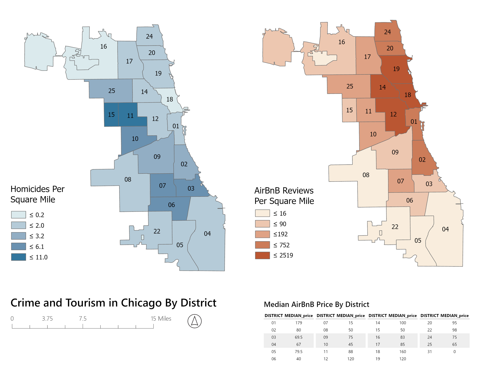

Many different agencies, organizations, companies, etc. collect and organize data in different ways so the lack of coordination and consistency can lead to errors. Also, the world is complicated so it can be hard to perfectly tabulate all data points.
Metadata is the data within the data that explain where the data is from, who organized it, and how it is projected. We use this information to decide how a data set should be used or whether we should be using it at all for a given problem.
A Join should be used when there is a shared field between two data tables that will allow for one set of data to be mapped onto another.
Area calculations require points of reference for calculations. Projections provide the reference points (coordinates) by which the software calculates the area, length, perimeter, and other geometric properties of a given object.
Creating a new field can allow for a new set of data to be calculated from a set of existing data points or objects, allowing for more detailed analysis of a data set beyond its given fields.